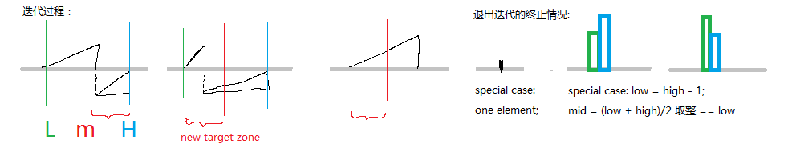

题目:
Suppose a sorted array is rotated at some pivot unknown to you beforehand.
(i.e., 0 1 2 4 5 6 7 might become 4 5 6 7 0 1 2).
Find the minimum element.
You may assume no duplicate exists in the array
基本上看到sorted, find, ... 这关键字就想到binary search二分查找.
根据输入, 可能出现的情况有:

然后就对着这些情况翻译为code就ok了。
特殊的情况要注意: 只有一个元素low=high, mid==low; 只有两个元素low=high+1, mid=(low+high)*0.5后取整=low;